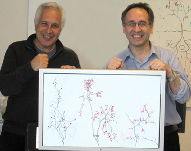
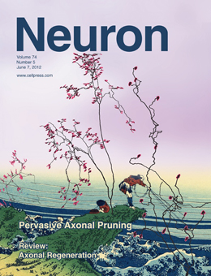

News Archives : 2012 : Study Suggests Neural Wiring Peaks at Birth and Then it's All Downhill from There [Lichtman Lab]
by Jeff Lichtman
June 7, 2012

Jeff Lichtman (left) and Juan C. Tapia
The goal of this study was to investigate the pattern of nerve connections between motor neurons and muscle fibers in newborn and embryonic animals.
Previous work by us and others had shown that neuromuscular connections are more complicated in early postnatal life (when rodents are about a week old) than in adults. At this age neuromuscular junctions are often contacted by two or occasionally three different axons, instead of one as occurs in adult animals, and each axon innervated several fold more muscle fibers than later.
We are interested to see if this was the peak of the extra nerve branching or whether at earlier ages there was even more complicated wiring.
We could not be use traditional anatomical and electrophysiological as young synapses are difficult to measure or image by conventional means.
We thus resorted to screening for rare cases in transgenic animals where a single young axon expressed a fluorescent protein and used immunostaining to enhance the faint fluorescent protein in these very fine caliber axons. JD Wylie one of the lead authors screened thousands of very young muscles to find 20 or so that expressed fluorescent protein in a single axon.
These animals provided good evidence that axons peaked in their branching complexity right at birth when axons innervated about ten-fold more muscle fibers than at later stages. Because muscle fibers in new born mice had the same number of synaptic sites as we found in adults this large number of branches suggested that each neuromuscular synaptic site should be innervated by ten or so different converging axons.
JC Tapia, the other lead author, using a new automated serial electron microscopy method we had been working on, was able to show that indeed each developing neuromuscular junction was innervated by ten or so different axons.
Our data suggests that in some muscle the wiring complexity at birth is at the theoretical maximum with all axons innervating all muscle fibers. Such all to all connectivity means that every possible connection that could have occurred actually did occur, albeit temporarily. If similar excess is present in the central nervous system, then the final pattern of nerve cell connections in the brain is due to selection of one pattern from an almost innumerable set of potential patterns that are present at the time animals first experience the world.
Read more in Neuron
Watch the video of Dr. Lichtman and Dr. Tapia describing their work.

cover design by Jeff Lichtman
[June 7, 2012]